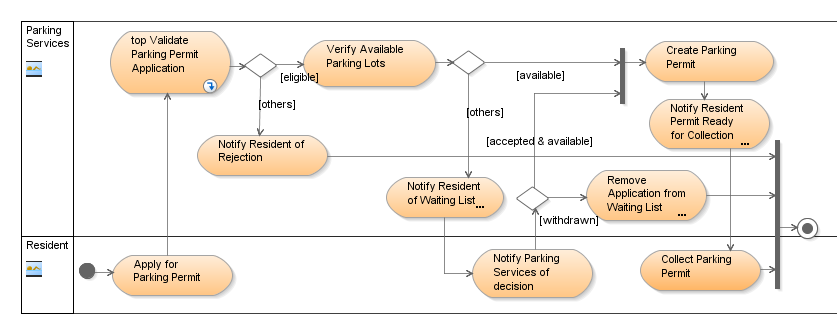
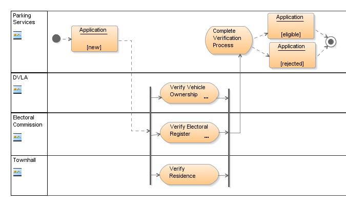
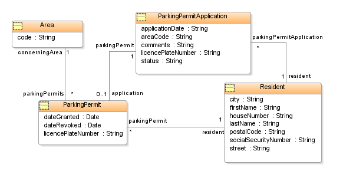
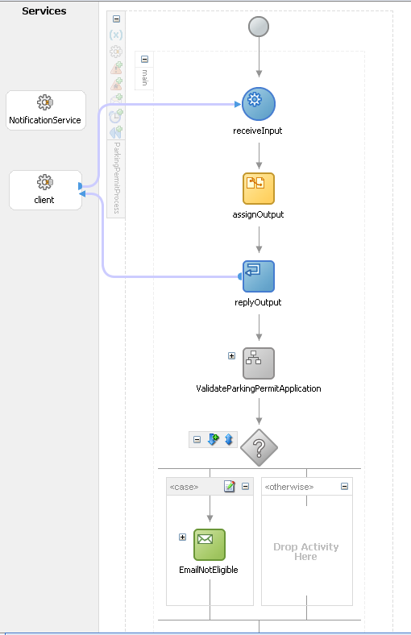
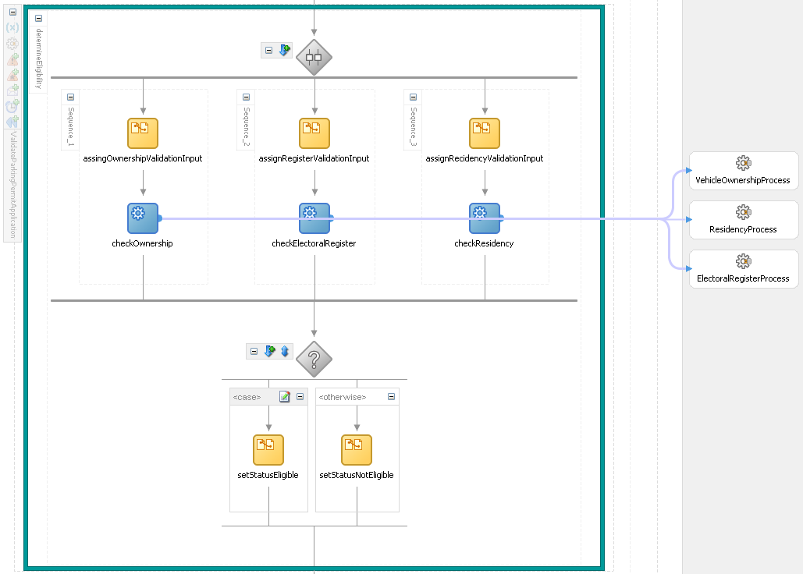

OUM |
From Business Process to Use Case |
||
Method Navigation |
Current Page Navigation |
||
|
|
||||||||
The purpose of this guidance is to help the reader “discover” how the process from specifying business processes, going to use case descriptions and resulting in the implementation of services (in this example using BPEL) might look like in practice in the context of the Oracle Unified Method (OUM).
Two of the most frequently asked question about OUM are:
The following content explores both these important and often misunderstood topics. It moves from business requirement to business processes to business use cases to narrower types of use cases and illustrates how detail gets added along the way. Many important aspects of how SOA relates to OUM are also illustrated.
The case used is of moderate complexity. When specific features that are not covered in the case but for which it turns out at they need to be addresses as well, the case can be extended to include them. An obvious example would be business rules.
After you have reviewed the "discovery" scenario below, It is recommended that you also review the Traceability of Requirements through the Inception, Elaboration, and Construction Phase Model diagrams of OUM to understand the flow of Requirements through the various models provided by OUM. You will also want to reference the RA.024 Develop Use Case Details task guideline, work product template and sample use cases.
The following activity diagram documents a business process concerning the application of a parking permit by a resident of some municipality.

This is a true “business process”, as it only concerns business level actors like people, or organization units, and totally abstracts from any system supporting it. The whole process could be manual, for all you know.
The same business flow can be documented as a use case description, typically of the scope “enterprise”. In this case, it also concerns a business use case, as it describes how the resident communicates with Parking Services, which in this context is an organization. As a use case the same business process would look something like the following:
PRIMARY ACTOR |
Resident | LEVEL | |
|---|---|---|---|
STAKEHOLDERS |
|
||
GOAL |
A Resident Applies for a Parking Permit, and gets rejected with justification or receives a Parking Permit (which could be after having been put on a waiting list). | ||
1. Resident applies for a parking permit 2. Parking Services validates if the Resident is eligible for a Parking Permit 3. Parking Services verifies that sufficient parking lots are available 4. Parking Services creates the Parking Permit 5. Parking Services notifies the Resident that the permit is ready for collection 6. Resident collects the Parking Permit Extensions2a Resident is not eligible
3a No parking lots available
|
|||
TRIGGERS |
A Resident applies for a Parking Permit | ||
PRECONDITIONS |
|
||
MINIMAL SUCCESS GUARANTEE |
|
||
SUCCESS GUARANTEE |
|
||
BUSINESS RULES |
|
||
SUPPLEMENTARY REQUIREMENTS |
|
||
During requirements capturing with use cases, initially it might suffice to document only the stakeholders, goal and main success scenario together with some business rules. This is where the Business Requirements process normally is limited to. The example use case has been worked out to a greater level of detail, which would typically be done in the Requirements Analysis process.
Although there is a thin line between Business Requirements and Requirements Analysis, it is good to recognize the difference as doing so offers better opportunities to develop use cases in iterations.
Compared for example with the situation where only a business process diagram is available, adding use cases adds value in that a (detailed) use case description provides the opportunity to specify aspects of the business process that goes beyond that of what you can express with only a diagram.
One of those aspects is stakeholders that are not directly involved in the process. In some cases identifying such stakeholders might give reason to extend the scope of the use case, like identifying the stakeholder “Neighbor” might have lead to considering to include in the business process a step that notifies them as well.
Other aspects that the diagram does not cover are the goals, the triggers, preconditions, and postconditions of the use case. All of them helping to validate the use case and some of them providing useful input for the next step in which the use case is going to be analyzed.
An advantage of putting it down in writing that may not be so clear at first sight is that by forcing yourself to express the business process in words might help you to discover flaws and omissions in the original process.
The value of putting effort in converting a business process into a use case description is not always easy to determine. It depends on many factors like the ability of people reviewing the business process to identify flaws in it, or how easy it is to correct errors later in the process. Probably the best advice would be: when in doubt, don’t hesitate and just do it. In case of the example the business process has been converted into a use case description in less than half an hour. The total process took much more time, but that was because the business process model needed to be corrected, because of errors found while describing the use case.
When looking at the business process you might notice that each activity actually is a use case of its own, most of them being at the level of user goal use cases (which is a use case for which the user can execute it in one session and walk away happily after that). The only exception might be the Validate Parking Permit use case, that for that reason has been drilled down further to investigate.
The result is the following Validate Parking Permit Application business process model:

As illustrated above, a couple of other organizations are involved in the validation, possibly making it a lengthy process, and initially suggesting that the upper level activity indeed is not a user goal level use case. But what if the other organizations have automated services available that respond within minutes? What this shows is that the level of a use case in some cases depends on the options for implementing it. This certainly is true in case of a Service Oriented Architecture.
For the following it will be assumed that such services do exist, making the Validate Parking Permit Application activity indeed an activity at the level of user goal use cases. In the context of the Oracle Unified Method this automatically classifies the diagram above part of the use case details rather than a business process.
However, the question if it is a business process model, or just use case details, is just an academic one. What is important is that you have a clear idea of when a business process needs to be further detailed. It is advisable to drill them down to the level of user goals, for the following reasons:
(*) Business use cases have the business as subject and are written by business analysts to document business processes. System use cases have the system as subject and are written by system developers to document how actors communicate with the system to achieve their goals.
Assuming that the requirements so far point to a solution using a Service Oriented Architecture, it is important to discover the services in the requirements. This is not only important for creating the application architecture but also provides important input to the estimating process.
One of the reasons to do business process modeling in the first place is that it relates very well to a Service Oriented Architecture, which makes implementation of the business process itself possible. You can imagine that the Parking Permit process is implemented as a longer running process that may take weeks to complete. But that will not be the only service involved, as the Parking Permit process itself needs other services to complete.
There are several approaches to discover services. One of them being by reviewing a business process and identify where the transitions are from an activity of one actor (swimlane) to that of another. In general this indicates a candidate service. In the example the candidate services are in the activities:
The Apply for Parking Permit obviously is the starting point for the Parking Permit process itself. You can imagine that the web site of the municipality provides some form that the resident can fill out and on submit calls the Parking Permit process.
The Notify Resident of Rejection, Notify Resident of Waiting List and Notify Resident Permit Ready for Collection (from Parking Services to the Resident) are candidate services whereby the Parking Service process needs to call out some provider that handles multi-channel notifications to third parties. Whether this will be one service that can handle some generic notification, or three different services that each handle a specific notification type, or any other combination, is a design decision and at this stage is yet to be determined.
The Notify Parking Services of Decision points to yet another candidate service that the Resident can call to get the application removed from the waiting list.
The Verify Vehicle Ownership, Verify Electoral Register and Verify Residence already have been indicated as existing services. However, if they were not, creating them would have been outside the scope of the Parking Permit process, as those services would then have to be created by third parties not involved in the project.
From the last example above, we can conclude that transitions to activities within the scope of secondary actors that are not within the scope of the project, only indicate calls to external services.
Any use case that has a user interface associated with it, might be detailed with a conceptual screen layout. Note that a conceptual screen layout is not a design, as it does not specify an actual screen layout, let alone aspects like styling. It’s main purpose is to specify which data should be shown, and should be validated during the review.
For example the use case Apply For Parking Permit could be detailed with a screen layout as follows:
Prompt |
Attribute |
|---|---|
Social Security Number |
[socialSecurityNumber] |
Name |
[firstName] [lastName] |
Address |
[house number] [street] [city] ([state] or [province]) [postal code] [country] |
License Plate Number |
licenseplateNumber |
Comments |
comments |
Legend: [ ] = display only, __ = input fields.
Other use cases that may require some conceptual layout are the following:
When analyzing the Validate Parking Permit Application use case, you may find that the Parking Services wants to be able to override the decision that comes out of the verification, for example by blocking a parking permit for someone that appears to hire a garage box (which none of the external organizations would note). In that case that use case also would require a conceptual screen layout.
What kind of artifacts should be created during the Analysis process depends on the nature of the use cases and the architecture that is going to be used to implement them. The most apparent candidates for adding detail are activity or sequence diagrams, class diagrams and (where useful) collaboration diagrams (used to describe how various “components” work together). For SOA projects also message descriptions and message transformations are obvious candidates.
For services that support more than one operation you also need to specify the names of each individual operation, as well as the types of their input and output messages.
Depending on its granularity, a service supports a summary use case (like the Parking Permit process), a user goal use case (like Apply for Parking Permit) or a subfunction use case. No example of the latter has been included, but you can imagine that for each separate channel (letter, email, SMS) a subfunction use case could be created that describes a generic notification services that can be used to send all kind of notifications to third parties.
Unless parallel development is be done where other (parts of the) system(s) depend on a service to be build, at this point there is not much value in specifying the exact WSDL of the service. For any external service you use, you need to have at least the WSDL location if not the WSDL itself.
When there is a flow involved, it might be useful to create an activity diagram. An obvious example would be a use case for a service that will be implemented as a BPEL process. As already noted, the activity diagram for the Validate Parking Application is an example of that. But use cases that involve a user interface with a complex screen flow, also are good candidates.
When there is data involved, a class diagram seems to be the obvious choice to document that. Many people doing SOA projects never seem to make a class diagram. Realize though that class diagrams add as much value to SOA projects as they for example do to pure Java/XML projects, as messages are about handling data as well. Having class diagrams available can add great value to optimizing the process of defining message formats and transformations.
When analyzing the Parking Permit use case the following classes can be recognized: Resident, Parking Permit Application, and Parking Permit. A distinction has been made between Parking Permit Application and Parking Permit, as not all applications will result in a permit, and the application follows a process with statuses that do not apply to the permit itself and vise verse.
Not very explicit in the description but obviously needed if you think about it, is a notion of an Area. You will need this in the process of determining if there are sufficient parking lots available. You might argue that the reason for not having discovered this earlier is because the way the waiting list is being processed has not been worked out to the proper level of detail.
The class diagram for the Parking Permit use case could look as in the following figure:

What format to use for a message descriptions probably foremost depends on who needs to validate it. Some people will prefer more “logical” descriptions in Word, while more technical oriented people probably have no problems with XSD’s.
Mind that to be able to create XSD’s that translate 1:1 to an implementation, it is important to understand the technique of implementing messaging. For example, initially one XSD has been created for the Resident and one for the Parking Permit Application, only to discover that it was more practical to create one XSD containing both and use that as the format for the message going from the resident to the Parking Process service. If you pay more attention to detailing the Apply for ParkingPermit use case, you probably would find that out up front.
For the sake of example the response message has been kept simple by returning a string stating that the application has been received successfully. The description of the request message looks as follows:
|
Other message descriptions that need to be made are the request and response messages for the Verify Ownership, Verify Electoral Registers and Verify Residence use cases.
You should keep the message descriptions separate from the use case descriptions, to support reuse. Refer to them from the use case descriptions instead.
How messages are transformed from one format to the other depends on the situation. For example, in case of BPEL, transformations can be done by doing one or more assign operations or by using an XSLT transformation, which in both cases may involve complex XPath queries or regular expressions.
For this reason transformations probably are best described in text, as has been done in the following example:
Parking Permit Application |
Ownership Validation |
|---|---|
Source/Transformation |
Target |
SocialSecurityNumber |
SocialSecurityNumber |
LicensePlateNumber |
LicensePlateNumber |
The example is trivial in that transformation consists of using a subset of the fields of the source and mapping those 1:1 on fields of the target message.
You can image than in practice often more complex transformations need to be done, for example in case of n:m mappings. In practice using a two-column format often suffices, where the (left) Source/Transformation column specifies which source fields are involved and any logic that needs to be applied to that, and where the (right) Target column specifies what the (single) target field is.
As with message formats you should keep the message transformations separate from the use case descriptions to support reuse.
Once the analysis model has been worked out to a sufficient level of detail, you are ready for the design. What “sufficient” means in this context, depends on many factors, the most important ones being the following:
In some cases a formal process needs to be followed that requires every change of the specifications to be approved up-front. On the other side of the spectrum there is the agile approach by which part of the (detailed) requirements are captured while validating iterations of a working program.
Developers are most comfortable with what they are used used to working with. However, you should be aware that when every developer involved needs to get used to one broadly accepted way of creating specifications almost always outclasses the situation in which developers need to get used to as many different styles as there are other developers. Not to mention the effort that needs to be put into the validation process involved with that.
For most projects that involve requirements analysis, class models are very useful to developers, even in the case of BPEL development.
The development of data-oriented systems that depend on a well-structured database can highly benefit from creating a detailed class diagram. In case of use cases that involve a user interface, activity diagrams normally only add value when there is a complex dialog involved.
For SOA projects that primarily deal with messaging it probably suffices to detail classes to the level that all attributes and their types are known. Message formats and transformations often need to be worked out in detail. In general, activity or sequence diagrams add great value to business processes and services, as they support a more effective implementation.
Other architectures, for example identity management/security, on their turn require yet other details.
A final remark that needs to be made at this point is that use case analysis should not be confused for a technical design. Although some people state that class models, and activity diagrams that describe system-internal behavior, are “technical” they actually only capture detailed requirements or validate higher-level requirements from a different angle.
The design involves mapping the analysis to artifacts that actually are implemented. Assuming that the Technical Architecture dictates a Service Oriented Architecture that uses BPEL to implement services and service orchestration, the design would at least include the following:
An example of an XSD already has been provided. Including WSDL’s in this case would not add much value, and a database design is too obvious. A design of the BPEL process to implement, in this case sufficiently has been provided by the activity diagrams already created. This probably will often be the case.
To show how the implementation might look like the following two BPEL process diagrams are included.
A part of the ParkingPermitProcess looks as follows:

Not surprisingly the initial business process diagram and the implementing BPEL process flow look very similar.
The same holds true for the user goal level Validate Parking Permit use case that looks as in the following picture (that actually zooms in on the ValidateParkingPermitApplication step of the previous picture):

In practice, you can imagine a human workflow step to be included that supports manual intervention of the outcome by Parking Services.

Copyright © 2006, 2016, Oracle and/or its affiliates. All rights reserved.